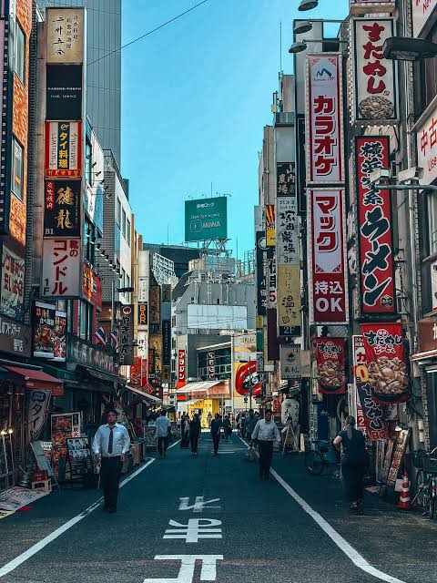

A VISUAL JOURNEY THROUGH JAPAN
A City of
Contrasts.
Quiet temples, electric streets, and little moments in between. Discover a different side of Tokyo.
01 / DISCOVER
Where tradition meets tomorrow.
MORE THAN A DESTINATION
Tokyo is a city that never stops surprising you. One moment, you are surrounded by bright signs and busy streets. A few steps away, you may find a quiet shrine.
Every neighborhood has its own rhythm, atmosphere, and story to tell.
“The best way to explore Tokyo is to get a little lost.”

02 / NEIGHBORHOODS
Where tradition meets tomorrow.
MORE THAN A DESTINATION
Tokyo is a city that never stops surprising you. One moment, you are surrounded by bright signs and busy streets. A few steps away, you may find a quiet shrine.
Every neighborhood has its own rhythm, atmosphere, and story to tell.
“The best way to explore Tokyo is to get a little lost.”
03 / GALLERY
探索更多照片
.jpg)
.jpg)
.jpg)
04 / TRAVEL PLANNER
Three Days in Tokyo.
Plan your mornings, afternoons, and evenings with this simple three-day itinerary.
| Day | Morning | Afternoon | Evening |
|---|---|---|---|
| Day 1 | Asakusa Temple | Ueno Park | Shibuya |
| Day 2 | Meiji Shrine | Harajuku | Shinjuku |
| Day 3 | Tokyo DisneySea | Odaiba | |
Travel Budget
A sample budget for transportation and meals in Tokyo.
| Category | Item | Estimated Cost |
|---|---|---|
| Transportation | Metro | ¥1000 |
| Train | ¥1,500 | |
| Food | Lunch | ¥1,200 |
| Dinner | ¥2,000 |